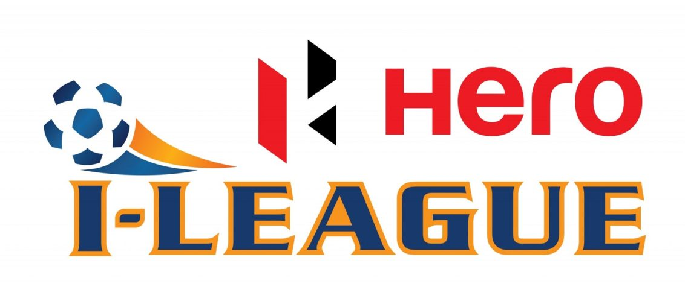

Posted at Date: February 19, 2019
Credit : রাইট স্পোর্টস ওয়েব ডেস্ক
আট ক্লাবের নজিরবিহীন জোট এআইএফএফ এবং এফএসডিএল-এর বিরুদ্ধে, ইমেল পাঠানো হল প্রফুল প্যাটেলকে

সর্বভারতীয় ফুটবল সংস্থার বিরুদ্ধে অভিনব জোট আই লিগের আট ক্লাবের। এআইএফএফ সভাপতি প্রফুল প্যাটেলকে পাঠানো হল ইমেল। এবারের আই লিগের এগার ক্লাবের মধ্যে এআইএফএফ-এর ইন্ডিয়ান অ্যারোজ স্বাভাবিকভাবেই এই জোটে নেই। বাকি দশ ক্লাবের মধ্যে নেই শিলং লাজং এবং রিয়েল কাশ্মীর। বাকি আট ক্লাব – মিনার্ভা পাঞ্জাব এফসি, নেরোকা এফসি, চেন্নাই সিটি এফসি, আইজল এফসি, চার্চিল ব্রাদার্স, গোকুলম কেরালা, মোহনবাগান এবং ইস্টবেঙ্গলের তরফে এই ইমেল পাঠানো হল এআইএফএফ-এর কাছে, যার প্রতিলিপি পাঠানো হল সংবাদমাধ্যমের প্রতিনিধিদের কাছেও।
দজোট করে বিদ্রোহের রাস্তাই বেছে নিল আই লিগের আট ক্লাব। প্রশ্ন তোলা হল এফএসডিএল এবং সর্বভারতীয় ফুটবল সংস্থায় তাঁদের অযাচিত নাক-গলানো ও প্রভাব নিয়ে, পক্ষান্তরে যা তাদের হাতে তুলে দিয়েছে এআইএফএফ-ই, তা নিয়ে। মিনার্ভা এফসি-কে চিহ্নিত করে বিশেষভাবে বঞ্চিত করা হয়েছে এফএসডিএল-এর বিরুদ্ধে মুখ খোলার কারণে, উঠে এসেছে সেই প্রসঙ্গও। কিছু দিন আগে এই ব্যাপারেই সরব হয়েছিলেন মিনার্ভা-মালিক রনজিৎ বাজাজ। সাংবাদিক সম্মেলন করেছিলেন কলকাতার এক সাততারা হোটেলে। এই ইমেল-এর বয়ান পরিষ্কার ভাবেই জানিয়ে দিচ্ছে, বিরাটভাবেই এই জোটের অন্যতম পুরোধা রনজিৎ বাজাজই।
ইমেল-এর বিষয় – আই লিগ এবং আই লিগের ক্লাবগুলির ভবিষ্যৎ নিয়ে সত্বর আলোচনার জন্য অনুরোধ এবং সাক্ষাৎ প্রার্থনা
মূল বিষয়বস্তু, আই লিগের ক্লাবগুলিকে সুপরিকল্পিতভাবে মেরে ফেলার আশঙ্কা থেকেই এই ইমেল, আট ক্লাবের। সংবাদমাধ্যমের খবর অনুযায়ী শোনা যাচ্ছে, আই লিগ এবারই শেষ। আইএসএল-ই আগামী মরসুম থেকে হয়ে দাঁড়াবে দেশের সেরা লিগ। ইমেল-এ সভাপতি প্রফুল প্যাটেলকে এই আট ক্লাবের প্রতিনিধিরা জানিয়েছেন, ‘আই লিগের ক্লাবগুলোই দেশের ফুটবলের মেরুদণ্ড। বছরের পর বছর ধরে এই ক্লাবগুলোই ফুটবলকে ধরে রেখেছে দেশের বিভিন্ন অঞ্চলে, নিরন্তর পরিশ্রমে। আইএসএল-এ যে ফুটবলাররা খেলছে এখন, সবাই-ই উঠে এসেছে আই লিগ থেকেই। আই লিগের প্রচারের ক্ষেত্রে ক্লাবগুলির প্রতি বিমাতৃসুলভ আচরণ এবং অত্যন্ত খারাপ বাণিজ্যিক নীতি সত্ত্বেও সমর্থনভিত্তি তৈরি এবং দেশে ফুটবলের জনপ্রিয়তা বাড়াতে বরাবরই সচেষ্ট থেকেছে এই ক্লাবগুলিই। ‘আই লিগ বন্ধ হয়ে গেলে তাই শুধু যে আই লিগের ক্লাবগুলির প্রতিই অবিচার হবে তা নয়, পুরোপুরি ক্ষতিগ্রস্ত হবে ভারতীয় ফুটবল। তাই ভারতীয় ফুটবলের ধারক ও বাহকদের কথা শোনাটাও যেমন উচিত বলে মনে করে এই ক্লাবজোট তেমনই মনে করে যে, দুপক্ষের কথাবার্তায় এমন সমাধানো পৌঁছন যায় সহজেই যেখানে কোনও পক্ষই অযথা ক্ষতিগ্রস্থ হবে না বা কাউকেই বঞ্চিত করা হবে না তাদের বেঁচে থাকার ন্যায্য অধিকার থেকে। দেশের সেরা লিগে খেলার সুযোগ থেকেও যাতে কোনও দলকেই বঞ্চিত হতে না হয় সে দিেকও নজর রেখে আপনার সাক্ষাৎপ্রার্থী আমরা, যেখানে আলোচ্য বিষয়গুলি –
আই লিগ এবং আইএসএল-এর সংযুক্তি
● দেশের সর্বোচ্চ লিগ অলঙ্ঘ্যনীয় এবং তা কখনও কোনও বেসরকারি মালিকানাধীন হতে পারে না বা চলতেও পারে না বেসরকারি মালিকের অঙ্গুলিহেলনে। এই লিগের মালিকানা থাকতেই হবে এআইএফএফ-এর হাতে, এফএসডিএল-এর মতো বেসরকারি সংস্থার হাতে নয়।
● বিগত কয়েক বছর ধরে আমরা আই লিগ এবং আইএসএল-এর সংযুক্তিকরণ সম্পর্কে বহুবার শুনে এসেছি, এখনও শুনছি। কিন্তু ব্যাপারটা মোটেই সংযুক্তিকরণের দিকে এগোচ্ছে না, নিশ্চিত।
● আই লিগের সব ক্লাবেরই দাবি দুটি লিগের সব দলকে একজায়গায় নিয়ে নতুন লিগ, সত্যিকারে সংযুক্তিকরণ বলতে যা বোঝায়। সেই লিগে অবনমন এবং উত্তরণ থাকতেই হবে।
● আইএসএল-এর বর্তমান ক্লাবগুলো যেহেতু আগে চুক্তিতে সই করেই খেলতে নেমেছে যে তারা নেমে যাবে না, তাদের সেই শর্ত নির্দিষ্ট সময়ের জন্য মেনে নিতেও রাজি আই লিগের ক্লাবগুলো।
● লিগ পুনর্গঠনের নামে আই লিগের কোনও ক্লাবকেই জোর করে নামিয়ে দেওয়া যাবে না দ্বিতীয় বিভাগে।
ভারতীয় ফুটবলে এফএসডিএল-এর হস্তক্ষেপ
● এআইএফএফ-এর বাণিজ্যিক সঙ্গী হওয়ার কথা ছিল এফএসডিএল-এর। কিন্তু, ভারতীয় ফুটবলে তাদের হস্তক্ষেপ প্রতিপদে প্রমাণিত। মনে হচ্ছে, দেশের ফুটবল চালানোর জন্য এআইএফএফ তাদের সমস্ত ক্ষমতা দিয়ে রেখেছে এফএসডিএল-কে।
● ওই বাণিজ্যিক সংস্থার আট কর্তাকে এআইএফএফ-এর আটটি গুরুত্বপূর্ণ কমিটিতে স্থান দেওয়া হয়েছে গত বছর। না মানা হয়েছে নির্ধারিত পদ্ধতি, না দেখা হয়েছে তারা সত্যিই সেই সব কমিটিতে থাকার যোগ্য কিনা। নিশ্চিতভাবেই যা স্বার্থের সঙ্ঘাত যেখানে এফএসডিএল শুধু বাণিজ্যিক সঙ্গী হিসাবেই কাজ করছে না, এআইএফএফ-এর পরিচালন পদ্ধতি নিয়ন্ত্রণ করছে, সিদ্ধান্তে প্রভাব ফেলছে। উল্টোদিকে, আই লিগ কমিটি তাদের কাজ ঠিকভাবে করছে না। আই লিগ কীভাবে চালানো হবে তা নিয়ে কথা বলা হচ্ছে না আই লিগের ক্লাবগুলোর সঙ্গেই, নেওয়া হচ্ছে না পরামর্শও।
● এআইএফএফ-এর সব গুরুত্বপূর্ণ কমিটিতে উপস্থিতির কারণে জাতীয় দলের কোচ নির্বাচন এবং দল নির্বাচনেও গুরুত্বপূর্ণ ভূমিকা নিচ্ছে এফএসডিএল। এমন কিছু সিদ্ধান্ত নেওয়া হচ্ছে যা নেওয়ার অধিকার থাকা উচিত একমাত্র সেই কাজের জন্য যথাযথ এবং যোগ্য ব্যক্তিদের হাতেই। ফলে সরাসরি ক্ষতিগ্রস্ত হতে চলেছে জাতীয় দলের স্বার্থও। যা কিছুতেই বোধগম্য নয়, কেন এআইএফএফ-এর টেকনিক্যাল কমিটির সদস্য হবে বিপণণ সংস্থার কোনও ননটেকনিক্যাল লোক?
● গতবারের চ্যাম্পিয়ন মিনার্ভা এফসি যেহেতু এফএসডিএল-এর অবাঞ্ছিত হস্তক্ষেপের কথা জোরগলায় বলেছিল, তাদের ম্যাচ সরাসরি না-দেখানোর সিদ্ধান্ত তড়িঘড়ি নেওয়া হয়েছিল মরসুমের মাঝখানে, ব্যাপারটা এখন সবার কাছেই জলের মতো পরিষ্কার। এআইএফএফ-এর কাছে আমাদের জরুরি ভিত্তিতে আবেদন, মিনার্ভা এফসি-কে যেন এভাবে চিহ্নিত লক্ষ্যবস্তু হতে না হয় ভবিষ্যতে। এ ছাড়াও অন্যান্য সব দলের ম্যাচ দেখানো যখন তখন বাতিল হয়ে যাচ্ছে, কোনও না কোনও অজুহাতে। এ ব্যাপারে এআইএফএফ-এর কড়া সিদ্ধান্ত নেওয়া উচিত এখনই। কিন্তু তা না করে গোটা ব্যাপারটাই ছেড়ে রাখা হয়েছে স্টার টিভি এবং সঙ্গী বাণিজ্যিক সংস্থার ওপর, যা পরিষ্কারভাবেই স্বার্থের সঙ্ঘাত কারণ ওই দুই সংস্থা আইএসএল-এর মালিকপক্ষ এবং মালিকপক্ষের সঙ্গী হওয়ায় আই লিগকে কোনও গুরুত্ব বা অগ্রাধিকার দিতে নারাজ। আই এই স্বার্থের সঙ্ঘাতের কারণেই এভাবে সুপরিকল্পিত উপায়ে আইএসএল-কে তুলে ধরা হচ্ছে দেশের এক নম্বর লিগ হিসাবে আর আই লিগকে দেখানোর চেষ্টা হচ্ছে দেশের দ্বিতীয় বিভাগীয় লিগ হিসাবে।
দুই লিগের সংযুক্তিকরণ নিয়ে এএফসি-র প্রতিবেদন
● আমরা জানি যে, এএফসি এবং ফিফার প্রতিনিধিরা আই লিগ এবং আইএসএল-এর সংযুক্তিকরণ নিয়ে একটি রিপোর্ট তৈরি করেছেন, গত বছর ভারতীয় ফুটবলের সঙ্গে যুক্ত মানুষদের সঙ্গে কথা বলেই।
● শোনা গিয়েছে, এসি রিপোর্ট এএফসি পাঠিয়ে দিয়েছে এআইএফএফ-কে, কয়েক মাস আগেই। কিন্তু, বারবার জানতে চেয়েও এআইএফএফ এ ব্যাপারে আই লিগের ক্লাবগুলিকে কিছুই জানায়নি, যদিও ক্লাবগুলির সঙ্গে কথা বলেছিল দুই পক্ষই। আমাদের অনুরোধ, এই রিপোর্টে কী আছে যত তাড়াতাড়ি সম্ভব জানানো হোক আমাদের, অযথা গোপনীয়তার প্রশ্ন না তুলে।
সব মিলিয়ে, আই লিগ ক্লাবগুলির এই জোট সার্বিকভাবে ঐক্যবদ্ধ হয়ে বিরোধিতা করছে উদ্দেশ্যপ্রণোদিতভাবে আই লিগকে দ্বিতীয় বিভাগীয় করে দেওয়া এবং এফএসডিএল-এর সর্বভারতীয় ফুটবল সংস্থার কাজে হস্তক্ষেপের। সঙ্গে, খুঁজছে নিজেদের ভবিষ্যৎ নিয়ে প্রশ্নের উত্তরও। আমাদের দাবি সত্যিকারের সংযুক্ত লিগ। তাই আপানার কাছে অনুরোধ, শীঘ্রই আমাদের সঙ্গে বসুন এই সব ব্যাপারে আলোচনা করে দ্রুত সিদ্ধান্তে পৌঁছতে।
ক্লাবগুলি থেকে আলাদা আলাদা ভাবে আপনার কাছে অনুরোধ করা হয়েছিল, আমাদের সঙ্গে আলোচনায় বসতে। কিন্তু তার কোনও উত্তর পাওয়া যায়নি। ব্যাপারগুলো যেহেতু অত্যন্ত গুরুত্বপূর্ণ, আগামী বুধবার, ২০ ফেব্রুয়ারি, যদি আমাদের সঙ্গে আলোচনার জন্য খানিকটা সময় দেন, ভাল হয়।’
Top Stories

Calcutta Sports Journalists' Club requests the pleasure of your company at its annual awards functionMore...

Jasprit Bumrah has been declared fit and he will now be available for selection for India's third Test against England at Trent Bridge. More...

Ronaldo has increased Juventus' standing among Europe's elite. More...